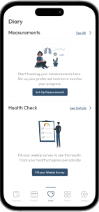
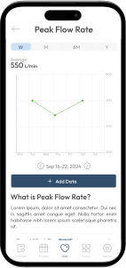
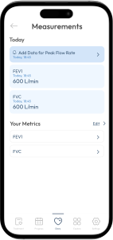

Older users need a simple way to monitor health measurements, understand changes over time, and maintain a consistent tracking routine. Traditional health dashboards can be difficult to navigate because of complex medical data, dense interfaces, and too many options.
The experience was designed around simplicity, accessibility, and clear data visualization. Users can select the health metrics most relevant to them, quickly enter new measurements, view their progress through easy-to-read charts, complete periodic health checks, and configure personalized reminders.
The interface reduces cognitive load through progressive disclosure, consistent navigation, focused actions, and customizable content, making everyday health monitoring more approachable for older adults.
View Prototype

